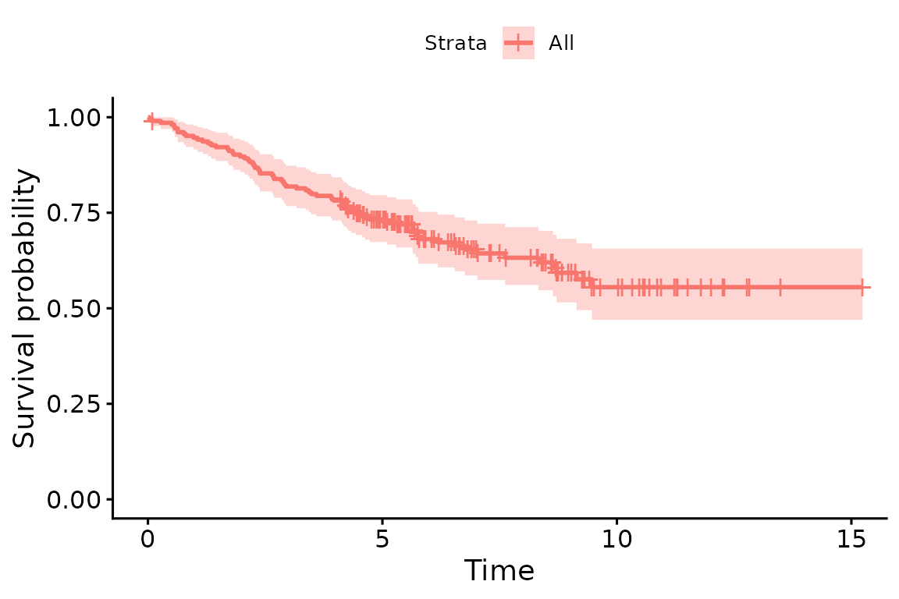
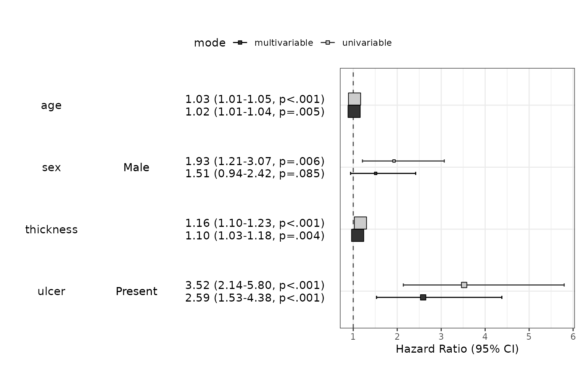
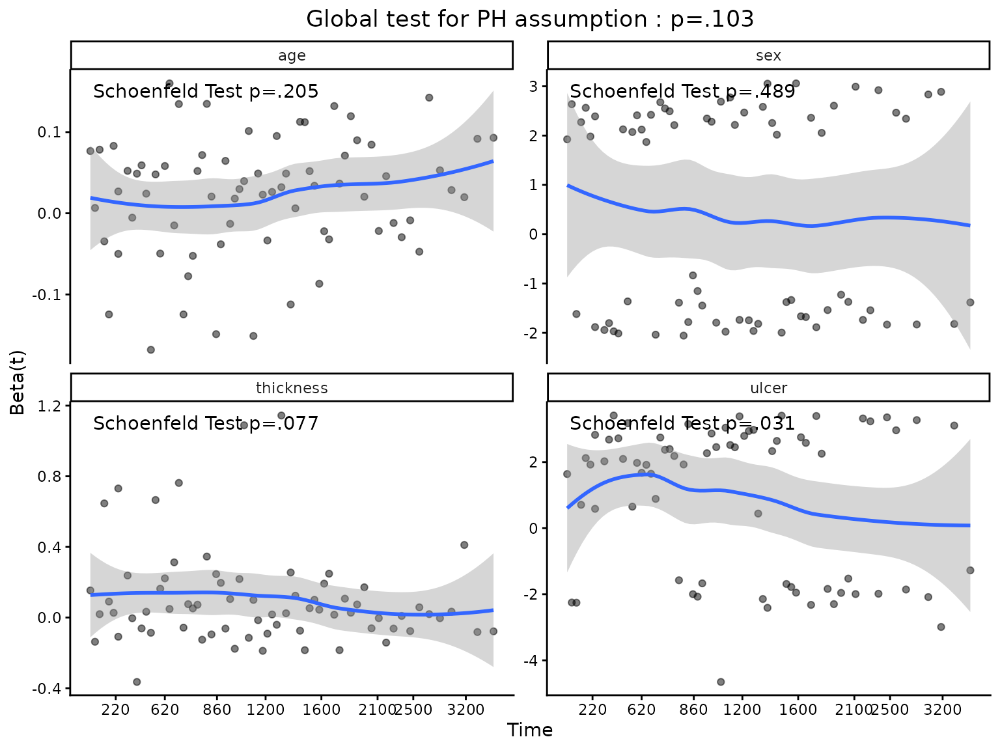
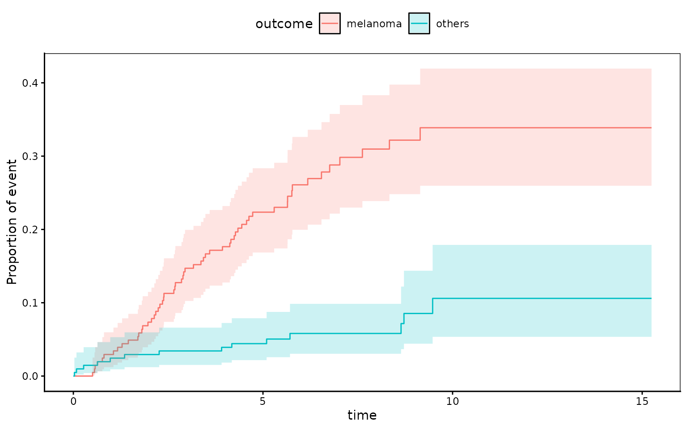
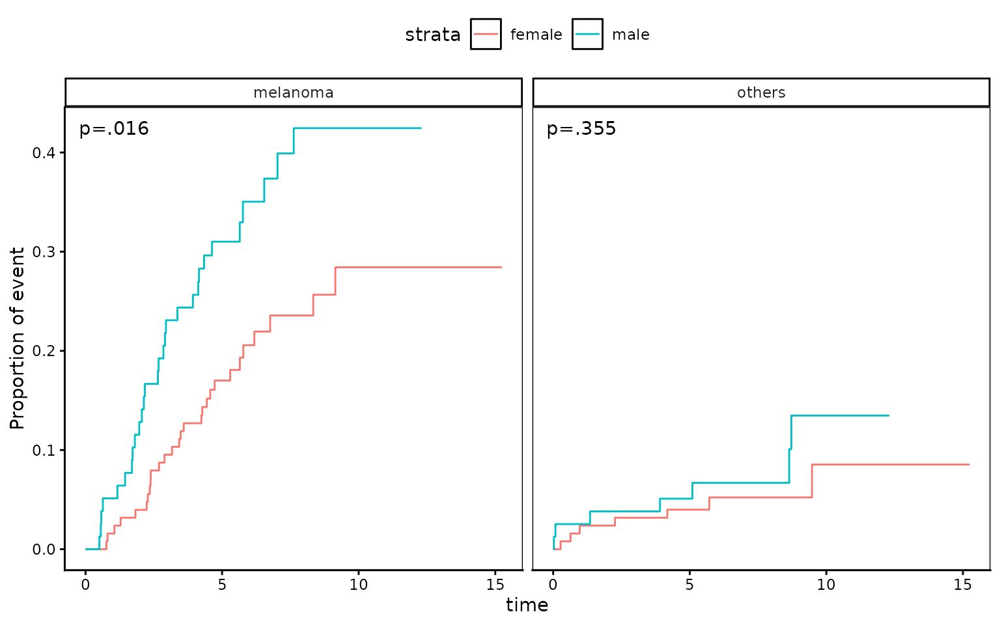

What is survival analysis ?
Survival analysis is the study of survival times and of the factors that influence them. Types of studies with survival outcomes include clinical trials, prospective and retrospective observational studies, and animal experiments. Examples of survival times include time from birth until death, time from entry into a clinical trial until death or disease progression, or time from birth to development of breast cancer(that is, age of onset). The survival endpoint can also refer a positive event. For example, one might be interested in the time from entry into a clinical trial until tumor response.
Package autoReg provides a number of functions to make these analyses easy to perform.
When writing package autoReg and this vignette, I was inspired from package finalfit by Ewen Harrison.
Installation
You can install autoReg package on github.
#install.packages("devtools")
devtools::install_github("cardiomoon/autoReg")Data melanoma
The data melanoma included in the boot package is a data of 205 patients with malignant melanoma. Each patient had their tumor removed by surgery at the Department of Plastic Surgery, University Hospital of Odense, Denmark during the period 1962 to 1977. The surgery consisted of complete removal of the tumor together with about 2.5cm of the surrounding skin. Among the measurements taken were the thickness of the tumor and whether it was ulcerated or not. These are thought to be important prognostic variables in that patients with a thick and/or ulcerated tumor have an increased chance of death from melanoma. Patients were followed until the end of 1977.
data(melanoma,package="boot")
gaze(melanoma)
———————————————————————————————————————
name levels stats
———————————————————————————————————————
time Mean ± SD 2152.8 ± 1122.1
status Mean ± SD 1.8 ± 0.6
sex Mean ± SD 0.4 ± 0.5
age Mean ± SD 52.5 ± 16.7
year Mean ± SD 1969.9 ± 2.6
thickness Mean ± SD 2.9 ± 3.0
ulcer Mean ± SD 0.4 ± 0.5
———————————————————————————————————————The patient status at the end of study was coded in status variable.
- 1 indicates that they had died from melanoma
- 2 indicates that they were still alive
- 3 indicates that they had died from causes unrelated to their melanoma.
There are three options for coding this.
- Overall survival: considering all-cause mortality, comparing 2 (alive) with 1 (died melanoma)/3 (died other) by logical expression status!=2 (e.g. status is not equal to 2)
- Cause-specific survival: considering disease-specific mortality comparing 2 (alive)/3 (died other) with 1 (died melanoma) by status==1 (e.g. status is equal to 1 )
- Competing risks: comparing 2 (alive) with 1 (died melanoma)
accounting for 3 (died other); So we will make a new variable
statusCRR
The sex variable in melanoma is coded as 0=female and
1=male. The ulcer variable is coded as 1=present and 2=
absent. It is possible to use this variables during analysis, but we
change these variables to factor with proper labels(just for aesthetic
purpose).
melanoma$status1 = ifelse(melanoma$status==1,1,ifelse(melanoma$status==2,0,2))
melanoma$statusCRR=factor(melanoma$status1,labels=c("survived","melanoma","other cause"))
melanoma$sex=factor(melanoma$sex,labels=c("Female","Male"))
melanoma$ulcer=factor(melanoma$ulcer,labels=c("Absent","Present"))gaze(melanoma,show.n=TRUE)
———————————————————————————————————————————————————
name levels N stats n
———————————————————————————————————————————————————
time Mean ± SD 205 2152.8 ± 1122.1 205
status Mean ± SD 205 1.8 ± 0.6 205
sex Female 205 126 (61.5%) 126
Male 79 (38.5%) 79
age Mean ± SD 205 52.5 ± 16.7 205
year Mean ± SD 205 1969.9 ± 2.6 205
thickness Mean ± SD 205 2.9 ± 3.0 205
ulcer Absent 205 115 (56.1%) 115
Present 90 (43.9%) 90
status1 Mean ± SD 205 0.4 ± 0.6 205
statusCRR survived 205 134 (65.4%) 134
melanoma 57 (27.8%) 57
other cause 14 (6.8%) 14
———————————————————————————————————————————————————Survival analysis for whole group
You can estimate survival in whole group with survfit() function in the survival package.
fit=survfit(Surv(time/365.25,status!=2)~1,data=melanoma)
fit
Call: survfit(formula = Surv(time/365.25, status != 2) ~ 1, data = melanoma)
n events median 0.95LCL 0.95UCL
[1,] 205 71 NA 9.14 NALife table
A life table is the tabular form of a KM plot. It shows survival as a proportion, together with confidence limits.
summary(fit,times=0:5)
Call: survfit(formula = Surv(time/365.25, status != 2) ~ 1, data = melanoma)
time n.risk n.event survival std.err lower 95% CI upper 95% CI
0 205 0 1.000 0.0000 1.000 1.000
1 193 11 0.946 0.0158 0.916 0.978
2 183 10 0.897 0.0213 0.856 0.940
3 167 16 0.819 0.0270 0.767 0.873
4 160 7 0.784 0.0288 0.730 0.843
5 122 10 0.732 0.0313 0.673 0.796Kaplan-Meier Plot
You can plot survival curves using the ggsurvplot() in the survminer package. There are numerous options available on the help page.
library(survminer)
ggsurvplot(fit)
Cox-proportional hazard model
The coxph() function in the survival package fits a Cox proportional hazards regression model. Time dependent variables, time dependent strata, multiple events per subject, and other extensions are incorporated using the counting process formulation of Andersen and Gill.
You can summarize the results of coxph() with autoReg() function. With a list of univariable model, you can select potentially significant explanatory variable(p value below 0.2 for example). The autoReg() function automatically select from univariable model with a given p value threshold(default value is 0.2). If you want to use all the explanatory variables in the multivariable model, set the threshold 1.
Dependent: Surv(time, status != 2) |
all |
HR (univariable) |
HR (multivariable) |
|
|---|---|---|---|---|
age |
Mean ± SD |
52.5 ± 16.7 |
1.03 (1.01-1.05, p<.001) |
1.02 (1.01-1.04, p=.005) |
sex |
Female |
126 (61.5%) |
||
Male |
79 (38.5%) |
1.93 (1.21-3.07, p=.006) |
1.51 (0.94-2.42, p=.085) |
|
thickness |
Mean ± SD |
2.9 ± 3.0 |
1.16 (1.10-1.23, p<.001) |
1.10 (1.03-1.18, p=.004) |
ulcer |
Absent |
115 (56.1%) |
||
Present |
90 (43.9%) |
3.52 (2.14-5.80, p<.001) |
2.59 (1.53-4.38, p<.001) |
|
n=205, events=71, Likelihood ratio test=47.89 on 4 df(p<.001) | ||||
If you want, you can decorate your table as follows:
x$name=c("Age(years)","Sex","","Tumor thickness (mm)","Ulceration","")
names(x)[1]="Overall Survival"
x %>% myft()Dependent: Surv(time, status != 2) |
all |
HR (univariable) |
HR (multivariable) |
|
|---|---|---|---|---|
Age(years) |
Mean ± SD |
52.5 ± 16.7 |
1.03 (1.01-1.05, p<.001) |
1.02 (1.01-1.04, p=.005) |
Sex |
Female |
126 (61.5%) |
||
Male |
79 (38.5%) |
1.93 (1.21-3.07, p=.006) |
1.51 (0.94-2.42, p=.085) |
|
Tumor thickness (mm) |
Mean ± SD |
2.9 ± 3.0 |
1.16 (1.10-1.23, p<.001) |
1.10 (1.03-1.18, p=.004) |
Ulceration |
Absent |
115 (56.1%) |
||
Present |
90 (43.9%) |
3.52 (2.14-5.80, p<.001) |
2.59 (1.53-4.38, p<.001) |
|
n=205, events=71, Likelihood ratio test=47.89 on 4 df(p<.001) | ||||
Hazard ratio plot : modelPlot()
You can draw hazard ratio plot
modelPlot(fit,uni=TRUE, threshold=1,show.ref=FALSE)
Warning:
[1m
[22m`aes_string()` was deprecated in ggplot2 3.0.0.
[36mℹ
[39m Please use tidy evaluation idioms with `aes()`.
[36mℹ
[39m See also `vignette("ggplot2-in-packages")` for more information.
[36mℹ
[39m The deprecated feature was likely used in the
[34mautoReg
[39m package.
Please report the issue at
[3m
[34m<https://github.com/cardiomoon/autoReg/issues>
[39m
[23m.
[90mThis warning is displayed once per session.
[39m
[90mCall `lifecycle::last_lifecycle_warnings()` to see where this warning was
[39m
[90mgenerated.
[39m
If you want to add another model summary to the table, the addFitSummary() can do this.
final=coxph(Surv(time,status!=2)~age+thickness+ulcer,data=melanoma)
x=x %>% addFitSummary(final,statsname="HR (final)")
x %>% myft()Dependent: Surv(time, status != 2) |
all |
HR (univariable) |
HR (multivariable) |
HR (final) |
|
|---|---|---|---|---|---|
Age(years) |
Mean ± SD |
52.5 ± 16.7 |
1.03 (1.01-1.05, p<.001) |
1.02 (1.01-1.04, p=.005) |
1.02 (1.01-1.04, p=.003) |
Sex |
Female |
126 (61.5%) |
|||
Male |
79 (38.5%) |
1.93 (1.21-3.07, p=.006) |
1.51 (0.94-2.42, p=.085) |
||
Tumor thickness (mm) |
Mean ± SD |
2.9 ± 3.0 |
1.16 (1.10-1.23, p<.001) |
1.10 (1.03-1.18, p=.004) |
1.10 (1.03-1.18, p=.003) |
Ulceration |
Absent |
115 (56.1%) |
|||
Present |
90 (43.9%) |
3.52 (2.14-5.80, p<.001) |
2.59 (1.53-4.38, p<.001) |
2.72 (1.61-4.57, p<.001) |
|
n=205, events=71, Likelihood ratio test=47.89 on 4 df(p<.001) | |||||
Testing for proportional hazards
An assumption of Cox proportional hazard regression is that the hazard (think risk) associated with a particular variable does not change over time. For example, is the magnitude of the increase in risk of death associated with tumor ulceration the same in the early post-operative period as it is in later years?
The cox.zph() function from the survival package allows us to test this assumption for each variable. The plot of scaled Schoenfeld residuals should be a horizontal line. The included hypothesis test identifies whether the gradient differs from zero for each variable. No variable significantly differs from zero at the 5% significance level.
result=cox.zph(fit)
result
chisq df p
age 1.610 1 0.205
sex 0.478 1 0.489
thickness 3.124 1 0.077
ulcer 4.633 1 0.031
GLOBAL 7.706 4 0.103
coxzphplot(result)
Disease-specific survival
You can analyze disease specific survival and make a publication-ready table.
fit=coxph(Surv(time,status==1)~age+sex+thickness+ulcer,data=melanoma)
autoReg(fit,uni=TRUE,threshold=1) %>% myft()Dependent: Surv(time, status == 1) |
all |
HR (univariable) |
HR (multivariable) |
|
|---|---|---|---|---|
age |
Mean ± SD |
52.5 ± 16.7 |
1.02 (1.00-1.04, p=.028) |
1.01 (1.00-1.03, p=.141) |
sex |
Female |
126 (61.5%) |
||
Male |
79 (38.5%) |
1.94 (1.15-3.26, p=.013) |
1.54 (0.91-2.60, p=.106) |
|
thickness |
Mean ± SD |
2.9 ± 3.0 |
1.17 (1.10-1.25, p<.001) |
1.12 (1.04-1.20, p=.004) |
ulcer |
Absent |
115 (56.1%) |
||
Present |
90 (43.9%) |
4.36 (2.44-7.77, p<.001) |
3.20 (1.75-5.88, p<.001) |
|
n=205, events=57, Likelihood ratio test=41.62 on 4 df(p<.001) | ||||
Competing risk regression
Competing-risks regression is an alternative to cox proportional regression. It can be useful if the outcome of interest may not be able to occur simply because something else (like death) has happened first. For instance, in our example it is obviously not possible for a patient to die from melanoma if they have died from another disease first. By simply looking at cause-specific mortality (deaths from melanoma) and considering other deaths as censored, bias may result in estimates of the influence of predictors.
The approach by Fine and Gray is one option for dealing with this. It
is implemented in the package cmprsk. The crrFormula()
function in autoReg package can make competing risk regression model and
addFitSummary() function can add the model summary.
fit1=crrFormula(time+status1~age+sex+thickness+ulcer,data=melanoma)
autoReg(fit,uni=TRUE,threshold=1) %>%
addFitSummary(fit1,"HR (competing risks multivariable)") %>%
myft()Dependent: Surv(time, status == 1) |
all |
HR (univariable) |
HR (multivariable) |
HR (competing risks multivariable) |
|
|---|---|---|---|---|---|
age |
Mean ± SD |
52.5 ± 16.7 |
1.02 (1.00-1.04, p=.028) |
1.01 (1.00-1.03, p=.141) |
1.01 (0.99-1.02, p=.520) |
sex |
Female |
126 (61.5%) |
|||
Male |
79 (38.5%) |
1.94 (1.15-3.26, p=.013) |
1.54 (0.91-2.60, p=.106) |
1.50 (0.87-2.57, p=.140) |
|
thickness |
Mean ± SD |
2.9 ± 3.0 |
1.17 (1.10-1.25, p<.001) |
1.12 (1.04-1.20, p=.004) |
1.09 (1.01-1.18, p=.019) |
ulcer |
Absent |
115 (56.1%) |
|||
Present |
90 (43.9%) |
4.36 (2.44-7.77, p<.001) |
3.20 (1.75-5.88, p<.001) |
3.09 (1.71-5.60, p<.001) |
|
n=205, events=57, Likelihood ratio test=41.62 on 4 df(p<.001) | |||||
You can estimate cumulative incidence functions from competing risk data.
library(cmprsk) # for use of cuminc()
melanoma$years=melanoma$time/365
fit=cuminc(melanoma$years,melanoma$status1)
fit
Estimates and Variances:
$est
5 10 15
1 1 0.22353960 0.3387175 0.3387175
1 2 0.04419779 0.1059471 0.1059471
$var
5 10 15
1 1 0.0008713044 0.001690760 0.001690760
1 2 0.0002086252 0.001040155 0.001040155At 5 years, cumulative death incidence due to melanoma is 22.3% and cumulative death incidence due to other cause is 4.4%.
You can plot this with the following R code.
ggcmprsk(years+status1~1,data=melanoma,id=c("alive","melanoma","others"),se=TRUE)
Warning:
[1m
[22mRemoved 6 rows containing missing values or values outside the scale range
(`geom_stepribbon()`).
ggcmprsk(years+status1~sex,data=melanoma,id=c("alive","melanoma","others"),
strata=c("female","male"))
Warning:
[1m
[22mRemoved 8 rows containing missing values or values outside the scale range
(`geom_step()`).
Analysis of clustered data
In clustered data, cases are not independent. For instance, one might be interested in survival times of individuals that are in the same family or in the same unit, such as a town or school. In this case, genetic or environmental factors mean that survival times within a cluster are more similar to each other than to those from other clusters, so that the independence assumption no longer holds. Marginal approach and frailty model can used to handle these type of data.
1. Frailty survival model
The retinopathy data is a trial of laser coagulation as a treatment
to delay diabetic retinopathy. We shall examine the effect of treatment
on time-to-blindness in patients with diabetic retinopathy, and also the
interaction of the effect of treatment(trt) with age of onset (juvenile
or adult onset), as defined by the type indicator. To estimate
individual effect, the frailty(id) shall be used.
data(retinopathy, package="survival")
fit=coxph(Surv(futime,status)~trt*type+frailty(id),data=retinopathy)
summary(fit)
Call:
coxph(formula = Surv(futime, status) ~ trt * type + frailty(id),
data = retinopathy)
n= 394, number of events= 155
coef se(coef) se2 Chisq DF p
trt -0.5059 0.2255 0.2207 5.03 1.00 0.0250
typeadult 0.3969 0.2591 0.2053 2.35 1.00 0.1300
frailty(id) 122.55 88.58 0.0098
trt:typeadult -0.9850 0.3618 0.3553 7.41 1.00 0.0065
exp(coef) exp(-coef) lower .95 upper .95
trt 0.6030 1.6584 0.3876 0.9380
typeadult 1.4872 0.6724 0.8949 2.4714
trt:typeadult 0.3734 2.6779 0.1838 0.7588
Iterations: 6 outer, 31 Newton-Raphson
Variance of random effect= 0.92598 I-likelihood = -847
Degrees of freedom for terms= 1.0 0.6 88.6 1.0
Concordance= 0.86 (se = 0.014 )
Likelihood ratio test= 218.4 on 91.13 df, p=2e-12Variance of random effect
and the p value of frailty(id) is 0.098. So we can reject
,
that is the individual patient has different effect.
The result is summarized as table with the following R code.
Dependent: Surv(futime, status) |
all |
HR (multivariable) |
|
|---|---|---|---|
trt |
Mean ± SD |
0.5 ± 0.5 |
0.60 (0.39-0.94, p=.025) |
type |
juvenile |
228 (57.9%) |
|
adult |
166 (42.1%) |
1.49 (0.89-2.47, p=.126) |
|
trt:type |
juvenile |
||
trt:type |
adult |
0.37 (0.18-0.76, p=.006) |
|
n=394, events=155, Likelihood ratio test=218.43 on 91.1321091975791 df(p<.001) | |||
With above result, we can estimate the risk of blindness in each group.
- juvenile, not treated :
- juvenile, treated :
- adult onset, not treated :
- adult onset, treated :
The type of diabetes is not significant on the development of blindness(). Laser treatment significantly reduced the risk of blindness(HR 0.60(95% CI 0.39-0.94), ). Laser treatment is effective in both type of diabetes, but more effective in adult-onset diabetes.
2. Marginal approach
In the marginal approach, the proportional hazards assumption is presumed to hold for all subjects, despite the structure in the data due to clusters. With this approach, the parameter estimates are obtained from a Cox proportional hazards model ignoring the cluster structure.
fit=coxph(Surv(futime,status)~trt*type+cluster(id),data=retinopathy)
summary(fit)
Call:
coxph(formula = Surv(futime, status) ~ trt + type + trt:type,
data = retinopathy, cluster = id)
n= 394, number of events= 155
coef exp(coef) se(coef) robust se z Pr(>|z|)
trt -0.4250 0.6538 0.2177 0.1850 -2.297 0.02160 *
typeadult 0.3413 1.4067 0.1992 0.1958 1.743 0.08129 .
trt:typeadult -0.8459 0.4292 0.3509 0.3036 -2.786 0.00534 **
---
Signif. codes: 0 '***' 0.001 '**' 0.01 '*' 0.05 '.' 0.1 ' ' 1
exp(coef) exp(-coef) lower .95 upper .95
trt 0.6538 1.5296 0.4549 0.9395
typeadult 1.4067 0.7109 0.9585 2.0646
trt:typeadult 0.4292 2.3301 0.2367 0.7782
Concordance= 0.613 (se = 0.019 )
Likelihood ratio test= 28.49 on 3 df, p=3e-06
Wald test = 34.88 on 3 df, p=1e-07
Score (logrank) test = 28.44 on 3 df, p=3e-06, Robust = 30.29 p=1e-06
(Note: the likelihood ratio and score tests assume independence of
observations within a cluster, the Wald and robust score tests do not).The result can be summarized as table.
Dependent: Surv(futime, status) |
all |
HR (multivariable) |
|
|---|---|---|---|
trt |
Mean ± SD |
0.5 ± 0.5 |
0.65 (0.45-0.94, p=.022) |
type |
juvenile |
228 (57.9%) |
|
adult |
166 (42.1%) |
1.41 (0.96-2.06, p=.081) |
|
trt:type |
juvenile |
||
trt:type |
adult |
0.43 (0.24-0.78, p=.005) |
|
n=394, events=155, Likelihood ratio test=28.49 on 3 df(p<.001) | |||
The result of marginal approach is similar to frailty approach. But in the frailty approach, subject-specific effect is estimated, whereas in the marginal approach, population average effect is estimated.